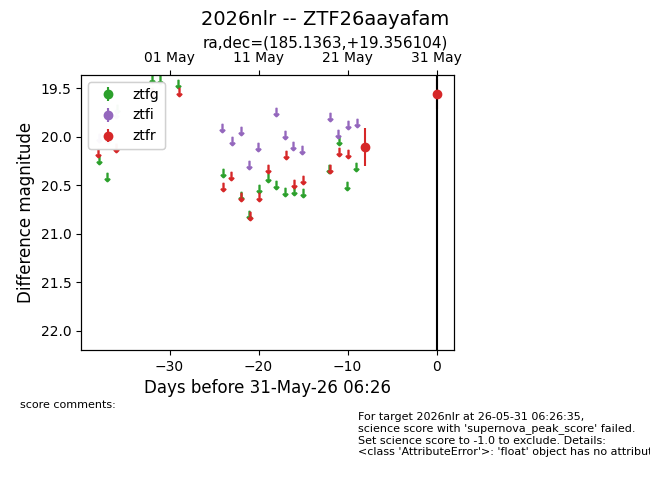
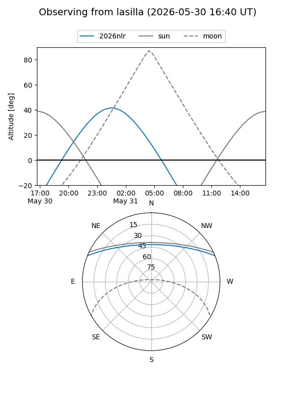
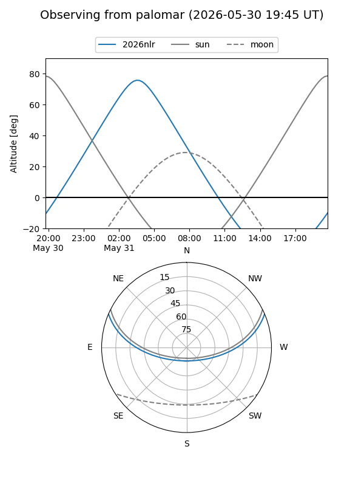

2026nlr
Target 2026nlr at 2026-05-31 06:27
Aliases and brokers:
lsst-FINK: link
lsst-Lasair: link
lsst-ALeRCE: link
ztf-FINK: link
ztf-Lasair: link
ztf-ALeRCE: link
TNS: link
YSE: link
alt names
ZTF26aayafam (ztf,fink_ztf)
2026nlr (tns,yse)
Coordinates:
equatorial (ra, dec) = 185.1363,+19.35610
equatorial (HMS+DMS) = 12:20:32.72,+19:21:21.97
galactic (l, b) = (258.9397,+79.48178)
Flags:
TNS confirmed: nan
Photometry:
last ztfr=19.56
2 ztfr detections
Lightcurve

Visibility


Additional plots